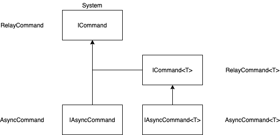

XToolkit Common
The most common components without dependencies. Almost all projects can should use this library.
Install
When you use this component separately from WhiteLabel.
You can install via NuGet:
Install-Package Softeq.XToolkit.Common
Description
Common
Collections
| Class | Description |
|---|---|
| ObservableRangeCollection | Represents a dynamic data collection that provides notifications when items get added, removed, or when the whole list is refreshed. |
| ObservableItemContentRangeCollection | Additionally to notifications inherited from ObservableRangeCollection notifies when any of the items (INotifyPropertyChanged) is updated. |
| ObservableKeyGroupsCollection | Grouping of items by key into ObservableRange. |
| BiDictionary | Use this dictionary in case you need fast access to the key by value. |
Extensions
- Assembly
- DateTime
- Dictionary
- Enumerable
- Enum
- List
- Stream
- String
- Task
- Type
Helpers
- StringsHelper
- TagsHelper
- TextRange
WeakObjects
| Class | Description |
|---|---|
| WeakAction | Stores an Action without causing a hard reference to be created to the Action's owner. The owner can be garbage collected at any time. |
| WeakFunc | Stores a Func without causing a hard reference to be created to the Func's owner. The owner can be garbage collected at any time. |
| WeakEventSubscription | Weak subscription for any event. |
Commands
| Class | Description |
|---|---|
| RelayCommand | Implementation of ICommand interface. Used WeakAction and WeakFunc. |
| AsyncCommand | Implementation of ICommand interface. Allows Commands to safely be used asynchronously with Task. |

Other
| Class | Description |
|---|---|
| Timer | Cross-platform Async timer. |
| GenericEventArgs | Generic EventArgs class. |
Common.iOS
iOS Extensions
- DateTime - DateTime to NSDate and back converter
- UIColor
- UIImage
- UITextField
- UIView
- UIViewController
Common.Droid
- BoolToViewStateConverter
Droid Extensions
- Context
- EditText
- Intent
- String
- TextView
- View